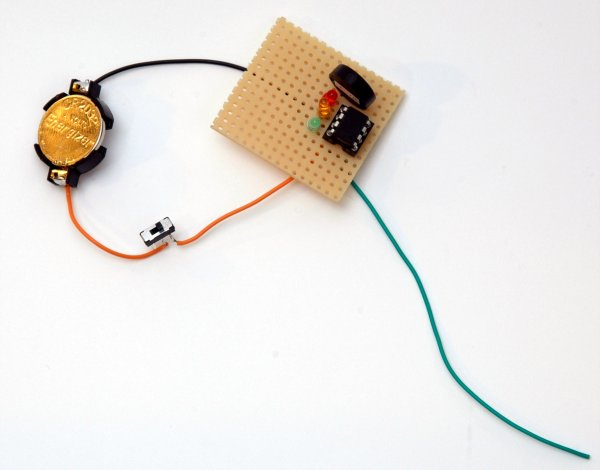
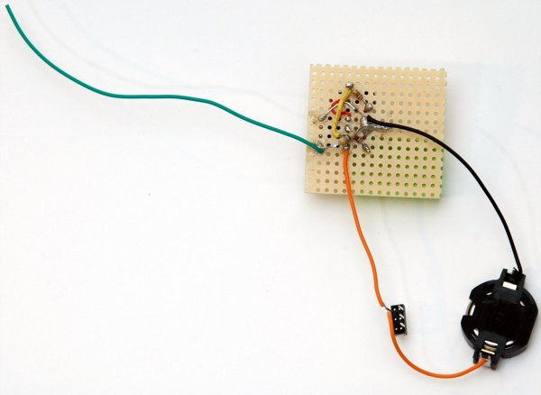

Time-Out: An ATtiny-based Repeater Time-Out Timer
by Keith Amidon, KJ6PUO and Peter Amidon, KJ6PUN
Here are top and bottom pictures of the initial ATtiny based prototype constructed on regular perfboard using the point to point construction but with separate LEDs instead of a single bicolor LED.
 
We packaged this second prototype in a small plastic case with an LED reflecting box made of card stock and aluminum and a translucent white plastic diffuser cut from a fluorescent light fixture diffuser, shown partially assembled here.
Second Soldered Prototype Packaging
-
Source code for this project
http://hamradioprojects.com/authors/kj6puo/+time-out/code -
Schematics
http://hamradioprojects.com/authors/kj6puo/+time-out/schematics -
Boarduino
http://www.ladyada.net/make/boarduino/ -
Arduino Tiny
http://code.google.com/p/arduino-tiny/ -
USBTinyISP
http://www.ladyada.net/make/usbtinyisp/ -
Sparkfun AVR-ISP Shield
http://www.sparkfun.com/products/11168 -
Aaron Lai EMF Detector
http://www.aaronalai.com/emf-detector -
MOSFET E-Field Sensor
http://home.comcast.net/~botronics/efield.html -
Field Strength Meter
http://www.zen22142.zen.co.uk/Circuits/rf/sfsm.htm
License
The Arduino sketches and schematics in this project are licensed
under the CC-BY-SA 3.0 license:
http://creativecommons.org/licenses/by-sa/3.0/